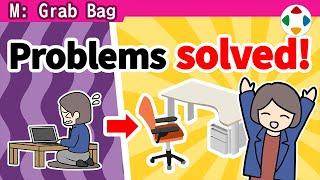
速览
因新冠疫情，《大乱斗 特别版》全面切换为远程办公。保密性极高的《特别版》要居家远程真的很难，但他认为必要，2020 年 4 月初就切换了。开始一段时间后，他向员工做了问卷：通勤时间、空调、饮食、等厕所等方面有显著改善，但问题也很多：没有像样的桌椅（有人坐在地上用矮桌敲电脑）、没有作为基准的电视显示器（需要准备足够性能的）、网络慢或不稳定（公寓网络慢，加上加密机制更慢）、无法测试对战（尤其测试组没法聚在一起直接对战，他午休的测试对战日课也变成了线上）、想要人际接触。其中不少问题只要能买到设备就能解决，尤其桌椅不像样会搞坏身体。于是他用有限会社 Sora 编预算做居家支援：只要是《特别版》的员工，就能自由挑选远程所需物品，不用归还、直接当私人物品；在亚马逊等选好后把商品页发过来，由 Sora 下单直接寄到员工家。买过桌子、椅子、显示器、显示器支架、简易隔板、网络摄像头、耳机、HDMI 切换器、边桌、地垫等。《特别版》由万代南梦宫工作室和各种雇佣、派遣人员混合组成，樱井自己也算从 Sora 外派；远程时公司物品和私人物品难以区分，各公司自行购买，手续和审批必然花时间——为了以最快速度推进，由 Sora 承担。效果很好，也很受欢迎。结果疫情没有平息，团队一直远程到最后。这是前所未有的经验，可能会大大影响今后的工作方式。疫情让游戏开发容易延迟是真的；《特别版》当时在做追加内容所以还好。以导演的感觉，作业效率大约下降了 3 成，但无论什么状态，都想尽量灵活地推进。
1. 全面远程 0:02
因新冠疫情，《大乱斗 特别版》全面切换为远程办公。
保密性极高的《特别版》居家远程真的很难，但他认为必要，在 2020 年 4 月初就切换了。
2. 员工问卷 0:33
开始一段时间后，他向各员工做了关于远程办公的问卷。通勤时间、空调、饮食、厕所排队等方面有显著改善。
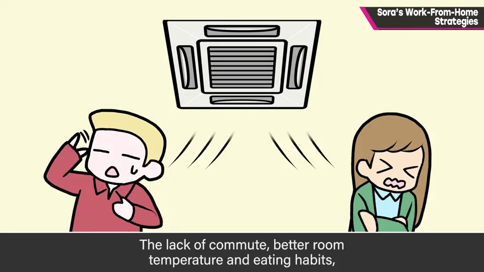
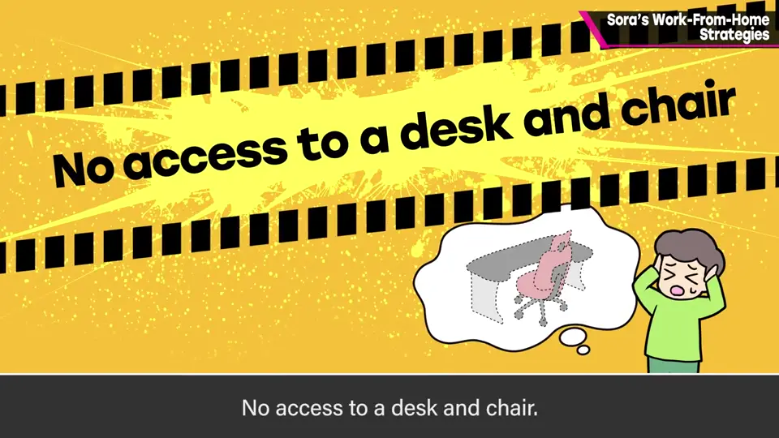
但也有很多问题：
- 没有像样的桌椅：有人坐在地上用矮桌敲电脑。
- 没有作为基准的电视显示器，需要准备足够性能的。
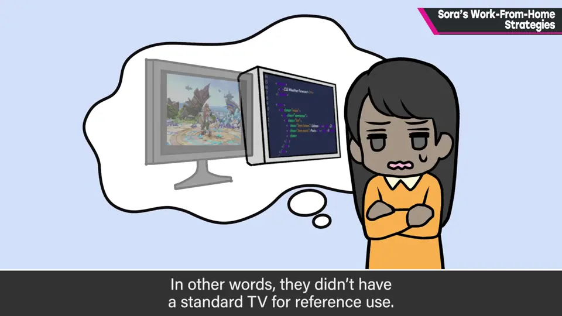
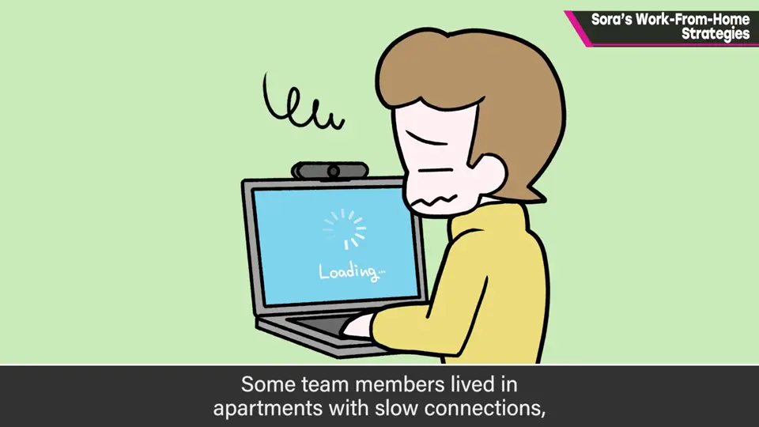
- 网络慢或不稳定：公寓网络本身慢，加上加密机制更慢。
- 无法测试对战：测试组无法聚在一起直接对战；樱井午休的测试对战也变成线上。
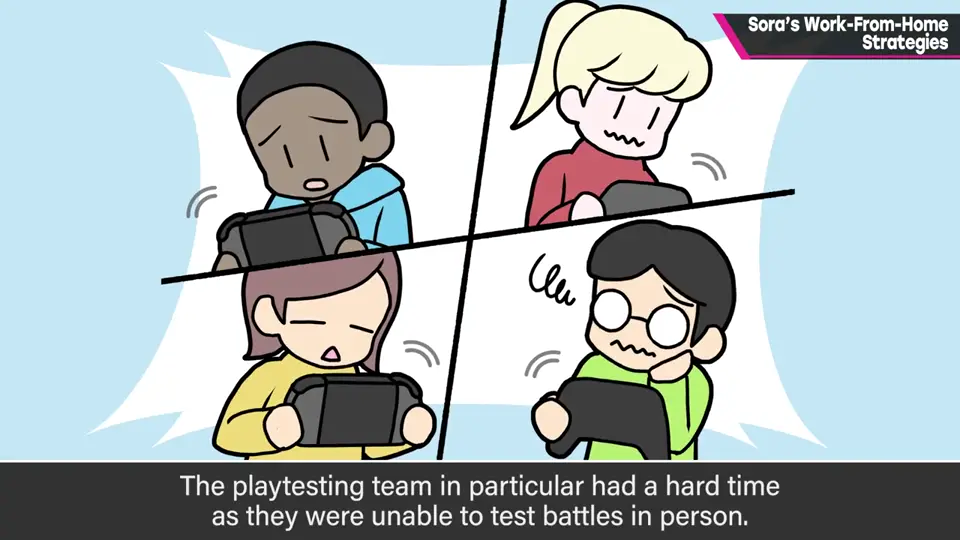
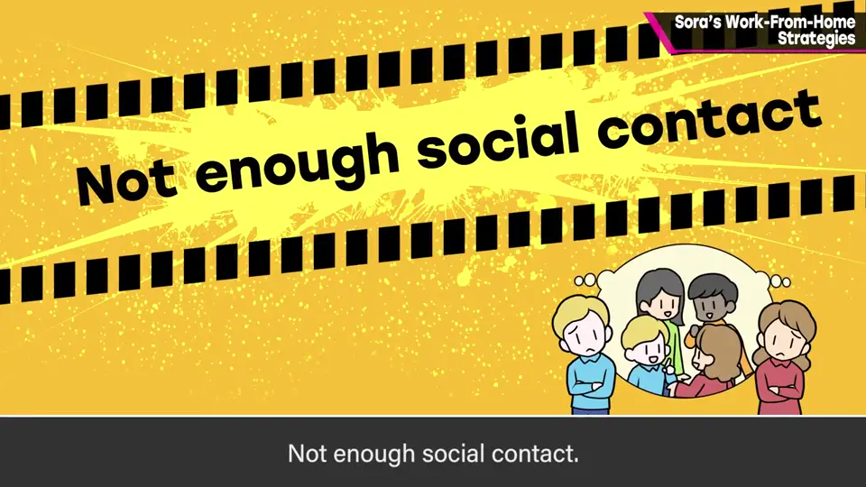
- 想要人际接触。
3. Sora 的居家支援 1:44
有些问题只要能买设备就能解决；尤其桌椅不像样会把身体搞坏。
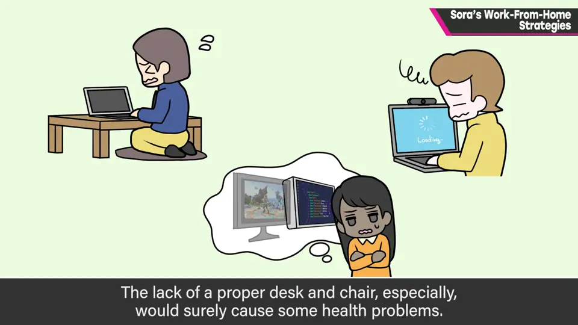
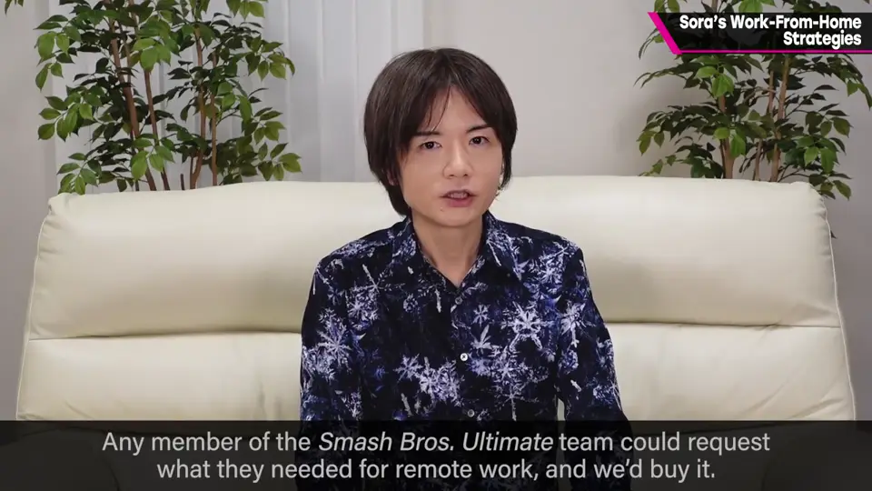
在亚马逊等选好后把商品页发过来，由 Sora 下单，直接寄到员工家。
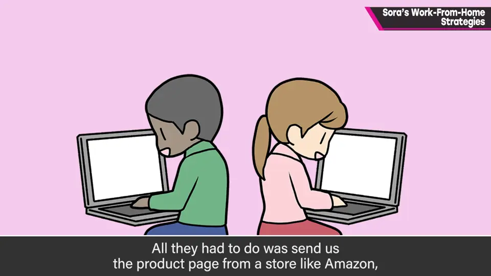
- 买过：桌子、椅子、显示器、显示器支架、简易隔板、网络摄像头、耳机、HDMI 切换器、边桌、地垫等。
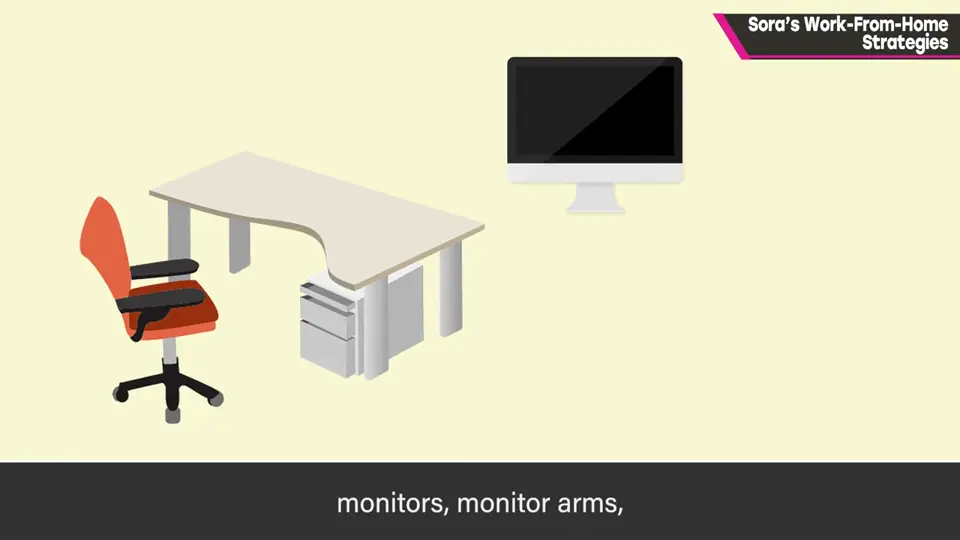
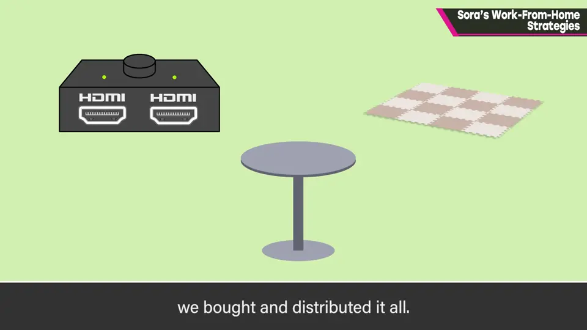
4. 为什么由 Sora 承担 2:43
《特别版》由万代南梦宫工作室和各种雇佣、派遣员工混合组成，樱井自己也算从 Sora 外派。
远程时公司物品与私人物品难以区分，各公司自行购买的话，手续和审批必然耗时。
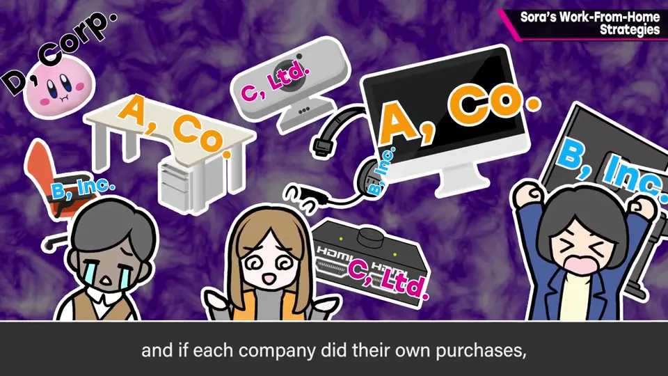
5. 结果与影响 3:21
结果疫情没有平息，团队一直远程到开发结束。这是前所未有的经验，可能会大大影响今后的工作方式。
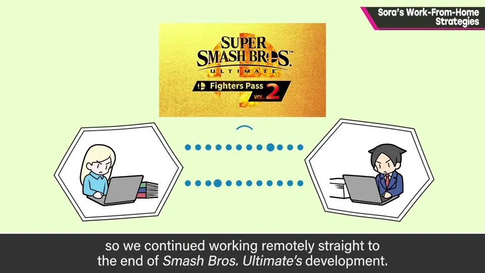
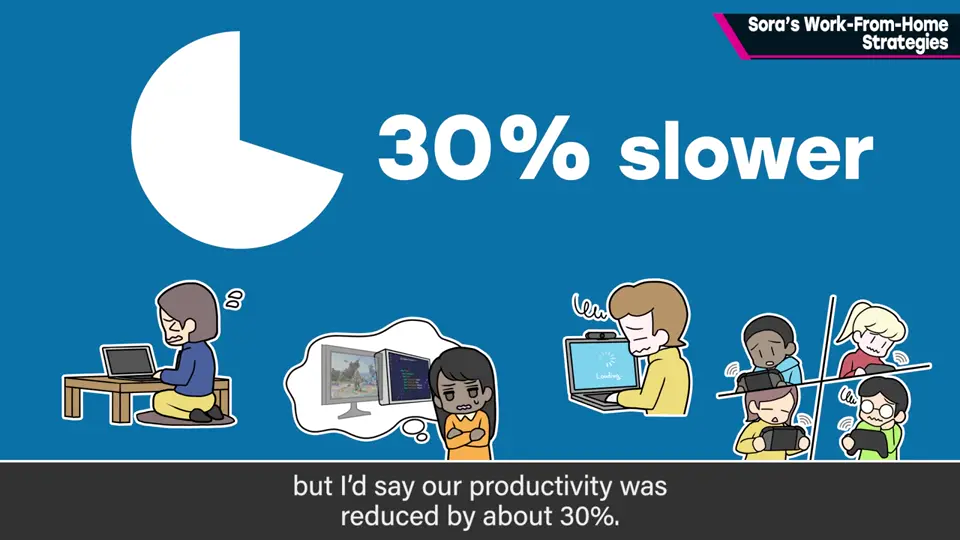
疫情让游戏开发容易延迟是真的；《特别版》当时在做追加内容，还算好，否则会很苦。
自测题
1. 问卷中远程办公的主要问题有哪些？
没有桌椅、没有基准电视、网络慢不稳、无法面对面测试对战、缺少人际接触。 1:00
2. Sora 的居家支援是怎么运作的？
员工自选所需物品发商品页，Sora 下单直寄到家，不用归还。 2:10
3. 为什么由 Sora 而不是各公司来采购？
团队跨多家公司，各自申请审批耗时；为追求最快速度由 Sora 承担。 3:10